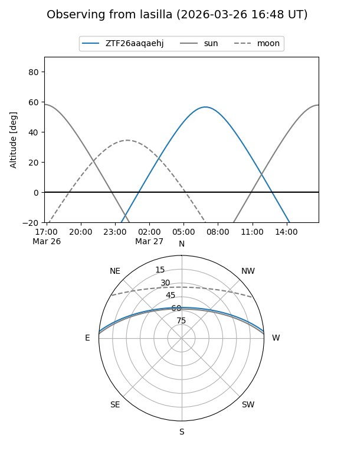
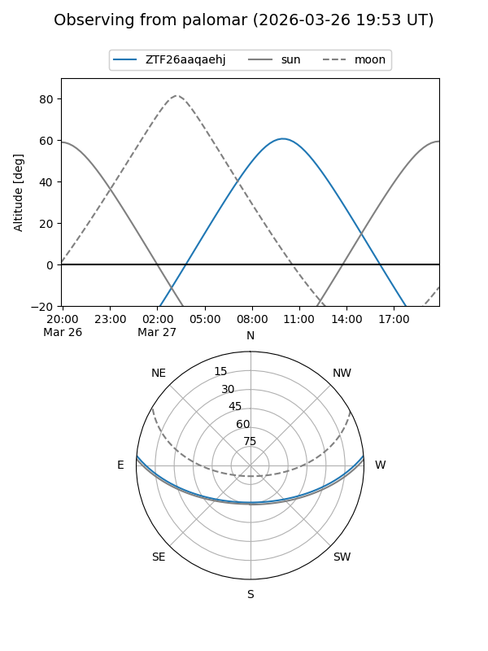

ZTF26aaqaehj
Target ZTF26aaqaehj at 2026-03-26 12:31
Aliases and brokers:
FINK: link
Lasair: link
ALeRCE: link
alt names
ZTF26aaqaehj (ztf,fink_ztf)
Coordinates:
equatorial (ra, dec) = 217.1978,+4.22744
equatorial (HMS+DMS) = 14:28:47.47,+04:13:38.80
galactic (l, b) = (352.6183,+57.38380)
Flags:
Photometry:
last ztfg=19.87
1 ztfg detections
Lightcurve
Visibility


Additional plots